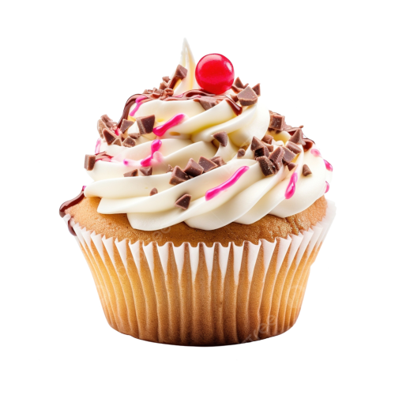
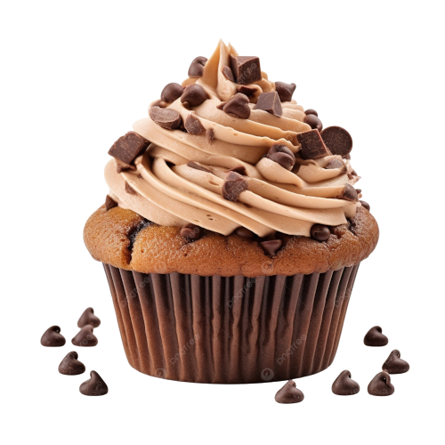

Baunilha
Simples, leve e delicado. O cupcake de baunilha é perfeito para quem ama um sabor suave, com um cheirinho que lembra bolo da vovó recém-saído do forno.

Chocolate
Feito com cacau puro e um toque de amor, nosso cupcake de chocolate tem massa fofinha e cobertura cremosa que derrete na boca. Um clássico irresistível!
Red Velvet
Elegante e marcante, o Red Velvet tem uma textura macia, levemente amanteigada e um toque sutil de cacau, finalizado com cobertura de cream cheese que equilibra perfeitamente o sabor.
Redes Sociais
Faça seu pedido aqui